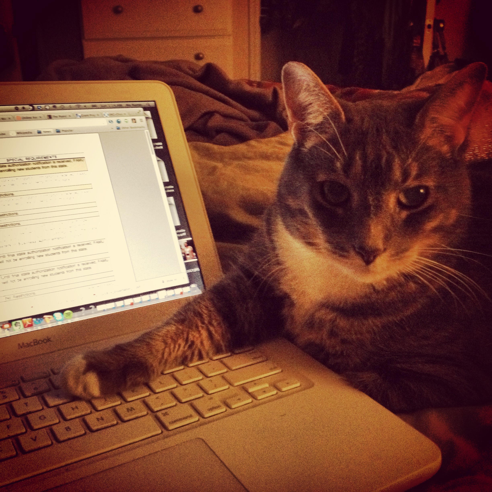

I'm currently recruiting participants for three research studies. If you're interested in participating in my research, please read the informed consent forms to learn more and sign up!
This research consists of interviews with women of color and non-binary people of color who get their news online. The interviews run between 30 to 60 minutes. Participants receive a $25 gift card to Amazon.com or Wal-Martfor their time.
This research consists of interviews with people who know, follow, and understand "Black Twitter". The interviews run about 60 minutes. Participants receive a $25 gift card to Amazon.com for their time.
This research consists of interviews with journalists of color who have completed any program aimed at recruiting or retaining minorities in newspaper newsrooms. The interviews run about 60 minutes. Participants receive a $25 gift card to Amazon.com or Wal-Mart for their time.